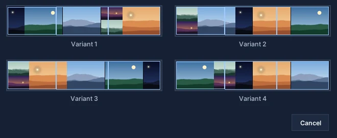
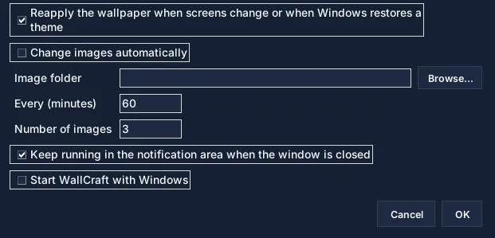

Add images
“Add images” button or drag and drop. Phone photos are turned upright.
Everything you need to compose a wallpaper across several screens: the window, the tools, the settings and fixes for common problems.
Jump straight to the part you need.
A first wallpaper in two minutes.
“Add images” button or drag and drop. Phone photos are turned upright.
Six layouts, including maximum optimization. Variants… suggests four other arrangements.
Fit keeps every image whole; Fill covers the screens by cropping around faces.
Move, Scale, Crop, layers, rotation and adjustments. Ctrl+Z undoes.
“Apply wallpaper” splits the composition and applies it screen by screen.
Four areas, top to bottom and left to right.
The toolbar holds what you use all the time; everything else is in the File, Image, Screens and Language menus.

Pick one in the Layout list, then Auto-arrange.
Splits the space into boxes of different sizes. With one image per screen, each image goes to its screen.
Rows of equal height across the full width, like a photo gallery.
Identical boxes, ideal for images of the same format.
One column per image, handy for portraits.
One row per image, for panoramas.
Tries thousands of arrangements and keeps the one that wastes the least space. Recommended.
Two ways to fit images into their boxes.
Fit shows every image whole, without distortion: empty bands may remain.
Fill covers the whole space: each image is cropped around detected faces, or around its most detailed area.
Select an image, then pick a tool above the workspace.
Move: drag the image; it snaps to the edges of the composition and of other images (hold Shift to disable snapping).
Scale: drag a corner, proportions are kept.
Crop: drag the handles to choose the visible part of the image.
Four other arrangements of the chosen layout, side by side.
Click Variants…, then the thumbnail you like: it replaces the current composition.

What each screen will show, before you apply.
The Preview tab draws your screens as they sit on your desk, with their name: “Left · Philips 23″”, “Center · iiyama 24.5″”…

So a line stays straight across screens of different sizes.
Screens menu › Real screen size… Tick the box: WallCraft places screens by their physical size, read from the display (EDID).

WallCraft can keep your wallpaper and change it for you.
Screens menu › Automatic wallpaper… WallCraft remembers one wallpaper per screen setup (laptop alone, docked…).

The most useful ones.
The most common problems.
It is enlarged beyond its size: the “Low resolution” warning says so. Use a larger image, make it smaller or switch to Fit.
WallCraft applies one image per screen; if Windows refuses, it tries “Span” mode and says so. Re-detect screens (Screens menu) and try again.
Turn on real screen size and set the gap between panels.
If automatic wallpaper is on, WallCraft reapplies yours within a minute. Otherwise, click Apply.
The composition updates on its own; WallCraft reapplies the wallpaper saved for that setup if there is one.
WallCraft Pro 2026.11.13 lines up one image across screens of different physical sizes, fills screens with face-aware cropping, keeps your wallpaper when you dock or undock, and rotates images automatically.
See how WallCraft Pro imports images, scales them manually, changes layer order, previews mixed-monitor results, and applies wallpapers on Windows.
Read the WallCraft Pro FAQ about cropping, mixed monitor sizes, Windows support, split export, open source access, and download state.
Download the current build, test your monitor layout, and keep the GitHub repository nearby for updates and source code.